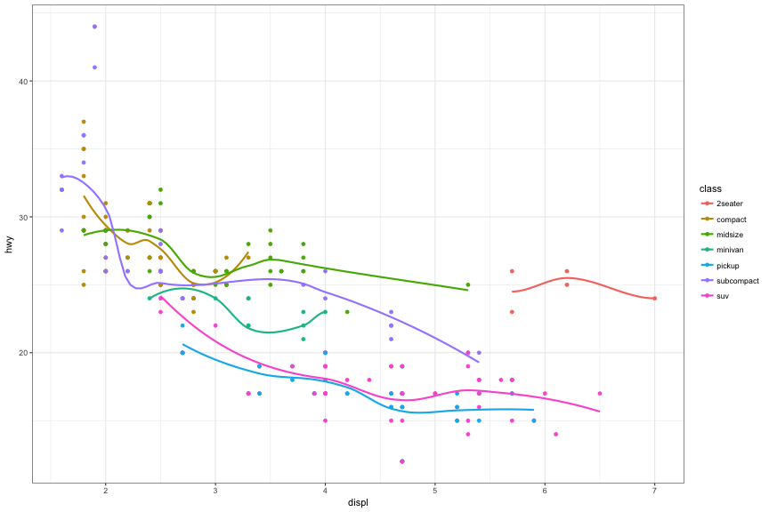

Quick stats lesson (with pictures!)
- Mean versus Median versus Mode
- Standard Deviation
- Correlation
Daniel Anderson


Above all else, show the data
Edward Tufte
| plot | mean_x | mean_y | sd_x | sd_y | cor |
|---|---|---|---|---|---|
| 1 | 9 | 7.500909 | 3.316625 | 2.031568 | 0.8164205 |
| 2 | 9 | 7.500909 | 3.316625 | 2.031657 | 0.8162365 |
| 3 | 9 | 7.500000 | 3.316625 | 2.030424 | 0.8162867 |
| 4 | 9 | 7.500909 | 3.316625 | 2.030578 | 0.8165214 |

| dataset | mean_x | mean_y | sd_x | sd_y | cor |
|---|---|---|---|---|---|
| away | 54.26610 | 47.83472 | 16.76983 | 26.93974 | -0.0641284 |
| bullseye | 54.26873 | 47.83082 | 16.76924 | 26.93573 | -0.0685864 |
| circle | 54.26732 | 47.83772 | 16.76001 | 26.93004 | -0.0683434 |
| dino | 54.26327 | 47.83225 | 16.76514 | 26.93540 | -0.0644719 |
| dots | 54.26030 | 47.83983 | 16.76774 | 26.93019 | -0.0603414 |
| h_lines | 54.26144 | 47.83025 | 16.76590 | 26.93988 | -0.0617148 |
| high_lines | 54.26881 | 47.83545 | 16.76670 | 26.94000 | -0.0685042 |
| slant_down | 54.26785 | 47.83590 | 16.76676 | 26.93610 | -0.0689797 |
| slant_up | 54.26588 | 47.83150 | 16.76885 | 26.93861 | -0.0686092 |
| star | 54.26734 | 47.83955 | 16.76896 | 26.93027 | -0.0629611 |
| v_lines | 54.26993 | 47.83699 | 16.76996 | 26.93768 | -0.0694456 |
| wide_lines | 54.26692 | 47.83160 | 16.77000 | 26.93790 | -0.0665752 |
| x_shape | 54.26015 | 47.83972 | 16.76996 | 26.93000 | -0.0655833 |


Matejka & Fitzmaurice (2017). Same stats, different graphs: Generating datasets with varied appearance and identical statistics through simulated annealing.
(tried and true)

(tried and true)

(slightly better)

Show the data!

Show the data!


NOTE: The following 10 slides (and the previous plot) inspired/taken from Karl Broman's presentation on graphs (see here)


Sean Reardon: https://cepa.stanford.edu/seda/overview


